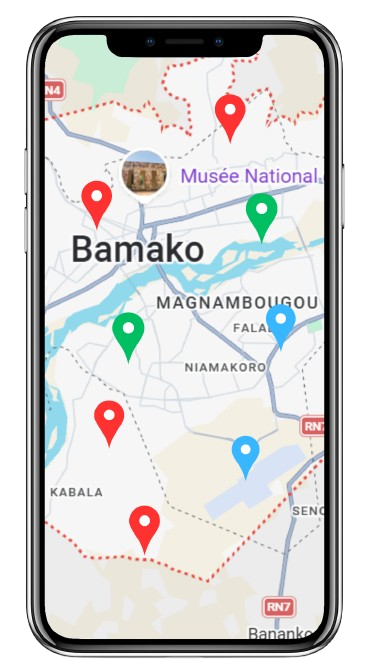

Ensemble pour
un Mali propre
Saniya So est une plateforme citoyenne qui permet à chacun de signaler les dépôts d'ordures, les décharges sauvages et les endroits insalubres dans nos quartiers.
Rejoignez des milliers de citoyens engagés pour un Mali plus propre.
1 248+
Dépôts signalés
5 320+
Citoyens engagés
320+
Dépôts traités
